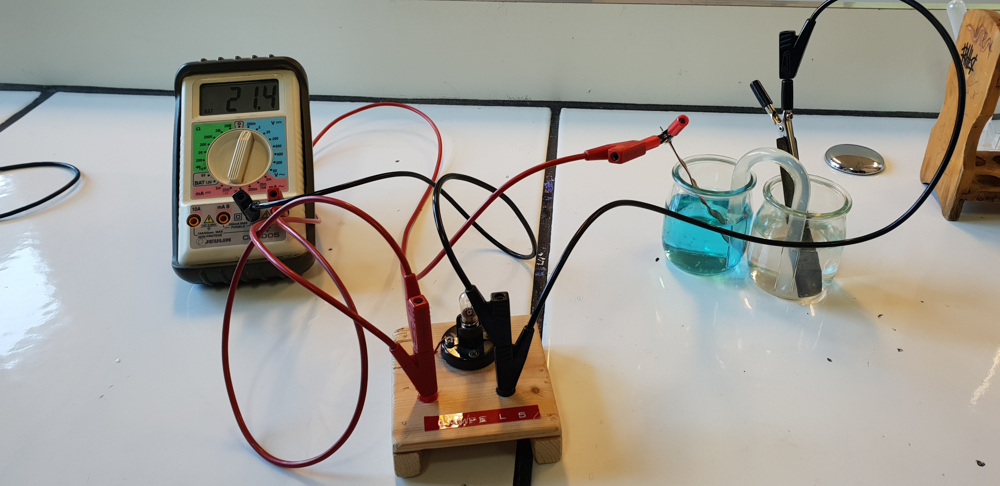
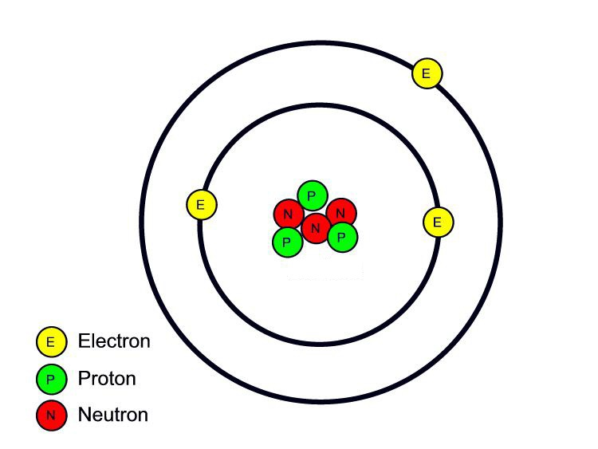
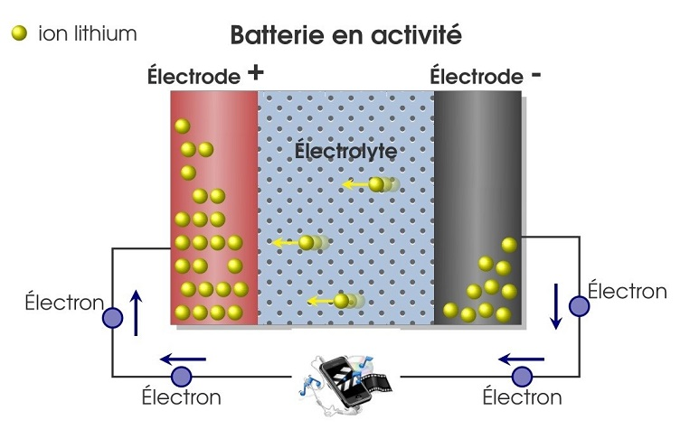
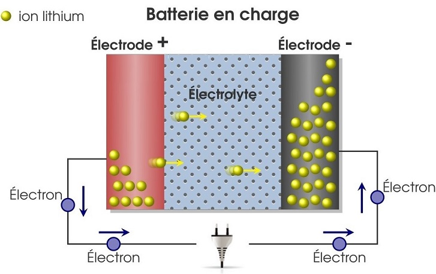
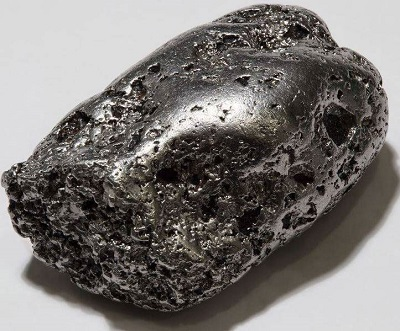
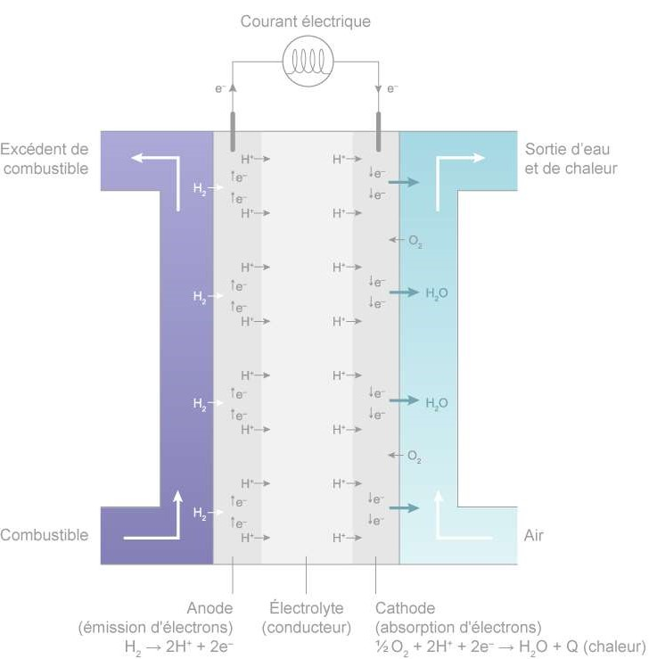
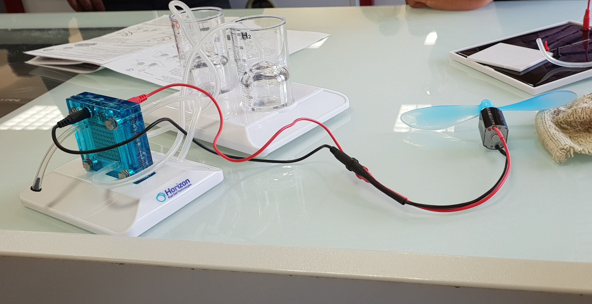
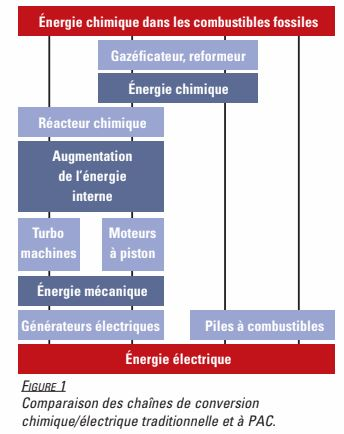

La batterie de la voiture électrique et de la voiture à hydrogène
La pile électrochimique
Avant de nous intéresser à la batterie lithium-ion, nous allons d’abord regarder comment fonctionne une pile électrochimique car elle repose sur le même principe de fonctionnement : l’oxydo-réduction.
Une pile est un convertisseur qui convertit l’énergie chimique en énergie électrique.
Nous avons plongé une lame de cuivre dans un bécher contenant une solution de sulfate de cuivre SO42- + Cu2+ (donc contenant du cuivre). Nous avons également plongé une lame de zinc dans un autre bécher contenant également une solution de sulfate de zinc SO42- + Zn2+ (donc contenant du zinc). Par la suite nous avons relié les deux béchers par un pont salin, qui est équipement de laboratoire utilisé qui assure le passage des électrons d’une demi-pile à une autre demi-pile. En effet, une pile est constituée de deux demi-piles. Une demi-pile est modélisée dans notre expérience par un bécher et une lame.
Photographie de notre expérience afin de comprendre le principe de fonctionnement d’une pile électrochimique (type Daniell)
L’oxydation est une demi-réaction de perte d’électrons et la réduction quant à elle une demi-réaction de gain d’électrons.
La réaction qui se produit est la suivante :
Zn(s) → Zn2+(aq) + 2e- (Oxydation)
Cu2+(aq) + 2e- → Cu(s) (Réduction)
Les atomes de zinc présent dans la lame de zinc vont se transformer en ions Zinc (Zn2+) et en électrons. C’est l’oxydation. Par définition la demi-pile où se déroule l’oxydation est la cathode (borne - de la pile). Les électrons qui sont chargés négativement sont attirés par la borne + de la pile. Les électrons vont donc se diriger vers le pont salin et vont aller vers la solution de sulfate de cuivre. Les ions Cu2+ et les électrons font ainsi formés du cuivre sous forme de solide : c’est la réduction. Par définition, la demi-pile où se déroule la réduction est l’anode (borne + de la pile).
Au fil de la réaction, la lame de zinc qui est le réactif de l’oxydation va peu à peu de ronger et la lame de cuivre va grossir car il y a formation d’atomes de cuivre.
Schéma représentant le fonctionnement de la pile électrochimique (type Daniell) :
Nous avons à travers cette réaction chimique tenté de faire fonctionner une lampe cependant la tension électrique était trop faible car elle est de seulement 21 mV. Nous avons tenté d’augmenter le nombre de pont salin pour tenter optimiser le passage des électrons mais la tension électrique n’était toujours pas suffisante.
La présence d’une tension électrique noues justifie bien que la réaction se produit.
L’expérience de la pile électrochimique nous a permis d’identifier l’anode, la cathode ainsi que de comprendre la réaction qui permet de fonctionnement d’une pile.
Comme dit précédemment, la batterie lithium-ion présent dans la voiture électrique utilise ce principe d’oxydo-réduction. Cette analogie avec la pile à combustible nous permet de mieux comprendre le fonctionnement de la batterie lithium-ion.
Batterie lithium ion
Le Lithium est un métal dont les atomes sont composés, entre autres, de trois électrons et de trois protons.
Schéma représentant un atome de lithium :
Il possède la caractéristique de céder facilement un électron car il possède 3 électrons comme nous pouvons le voir ci-dessus. Pour respecter la règle du duet, il doit céder un électron de telle façon à ne posséder que 2 électrons. Il devient alors un ion, d’où le terme Lithium-Ion. La batterie comporte un ou plusieurs accumulateurs, appelés cellules, dotés chacun de deux électrodes.
Dans de nombreux modèles, la cathode (partie négative) est faite d’oxyde de Cobalt (CoO2), avec un peu de Lithium, tandis que l’anode (partie positive) est faite de graphite. L’électrolyte (élément qui permet le passage des ions entre l'anode et la cathode) contient pour sa part des ions Lithium en grande quantité. La première charge des cellules est réalisée par le fabricant de la batterie car elle amorce le processus et fait s’accumuler les ions Lithium dans l’anode, créant ainsi une différence de potentiel entre la cathode et l’anode.
 La migration des électrons se fait grâce au principe chimique de l’oxydoréduction. A la cathode, constituée de carbone, l’oxydation prend place : les ions lithium sont libérés. On a donc la demi-équation suivante :
xLi+ + xe- +6C --> LixC6
A l’anode en oxyde de cobalt lithium, la réduction s'accomplit. Les ions lithium sont absorbés par l’anode, ce qui nous donne :
LiCoO2 --> Li1-xCoO2 + xLi+ + xe-
Pendant la durée de vie de la batterie, les ions de Lithium vont donc faire des allers-retours dans l’électrolyte, entre l’anode et la cathode, comme le montre la vidéo ci-dessous :
La pile à combustible
La voiture à hydrogène s’inscrit comme étant une voiture innovante et écologique. Pour certains, c’est une voiture électrique ou d’autre la voiture à hydrogène n’en ai pas une. Nous allons la traiter dans une certaine mesure.
L’hydrogène est l’un des éléments les plus
simples de l’univers, puisqu’il est composé d’un proton et d’un électron.
Sur la terre, il se présente sous la forme de H2 soit deux atomes d’hydrogène formant une molécule.
Le principe de fonctionnement de la pile à combustible repose sur l'oxydation d'un combustible (l'hydrogène) et la réduction d'un comburant (l'oxygène). Cette réaction aboutit à la production simultanée d'eau, d'énergie électrique et de chaleur. Elle est constituée par deux électrodes (une anode émettrice d'électrons et une cathode réceptrice d'électrons), séparées par un électrolyte. Une membrane évite la mise en contact des réactifs à l'anode et à la cathode.
À l'anode, on a donc une oxydation électrochimique de l'hydrogène : H2 → 2H+ + 2e+
À la cathode, on observe la réduction de l’oxygène : O2 + 4H+ +4e- → 2H2O
Le bilan global est alors : 2H2 + O2 → 2H2O
Selon les paramètres souhaités ou les applications, il existe différents types de piles à combustible utilisant des électrolytes et des électrodes de nature différente. La PEMFC (Proton Exchange Membrane Fuel Cell, ou pile à membrane à échange de protons) est, par exemple, utilisée par tous les constructeurs automobiles car elle fonctionne à basse température et évite un chauffage préalable, permettant un démarrage rapide. Grâce à son électrolyte solide, elle a aussi une durée de vie plus longue (jusqu'à 100.000 heures). Son inconvénient : le platine, utilisé comme catalyseur (substance qui augmente la vitesse d'une réaction chimique sans paraître participer à cette réaction) aux électrodes, coûte très cher.
Image du platine

Contrairement aux piles traditionnelles ou aux batteries, l’énergie n’est donc pas stockée dans le volume fini de la pile lui-même mais dans des réservoirs de gaz qui peuvent alimenter la PAC de manière continue. Le flux d'énergie délivré par la PAC découle de la circulation du gaz combustible (H2) et du gaz oxydant (O2) qui se trouve dans l’atmosphère.
Voici un schéma qui synthétise le fonctionnement d’une pile PEMFC :

La production d’énergie électrique s’accompagne de pertes thermiques qu’il convient
d’évacuer par l’intermédiaire d’un circuit de refroidissement.
Nous avons réalisé une expérience pour mettre en évidence la présence d’un courant électrique lors de la réaction chimique d’une pile à combustible. Nous avons pris un socle pour poser la pile à combustible (Reversible Fuel Cell) et nous avons rempli deux béchers d’eau distillé. A la pile, nous avons relié une hélice afin de savoir s’il y a effectivement un courant électrique qui se produit.
Au début, l’hélice ne tournait pas mais nous avons électriser la pile dans l’objectif de forcer un transfert d’électron. Ensuite, l’hélice tournait, nous en concluons que la réaction chimique a lieu et que cela permet bien la production d’énergie.
Nous avons essayé de faire fonctionner l’hélice sans passer par la pile à combustible mais à l’aide de panneaux photovoltaïques cependant le soleil n'était pas présent ce jour-là. Nous avons essayé à plusieurs reprises mais nous étions en hiver et les rayonnements solaires étaient insuffisants pour faire tourner l’hélice.
L'utilisation de piles à combustible permet la transformation de l'énergie chimique dans les combustibles
fossiles et des énergies chimiques en général en énergie électrique sans étape intermédiaire.
Les chaînes de conversion traditionnelle doivent pour transformer l'énergie chimique dans les combustibles fossibles passer par :
un gazéficateur/reformeur, un réacteur chimique, des turbo machines ou moteur à piston et finalement par des générateurs électriques.

La chaine de conversion chimique avec l’utilisation de la pile à combustible a l’avantage d’être plus directe et ainsi cela optimise les pertes liées à la conversion.